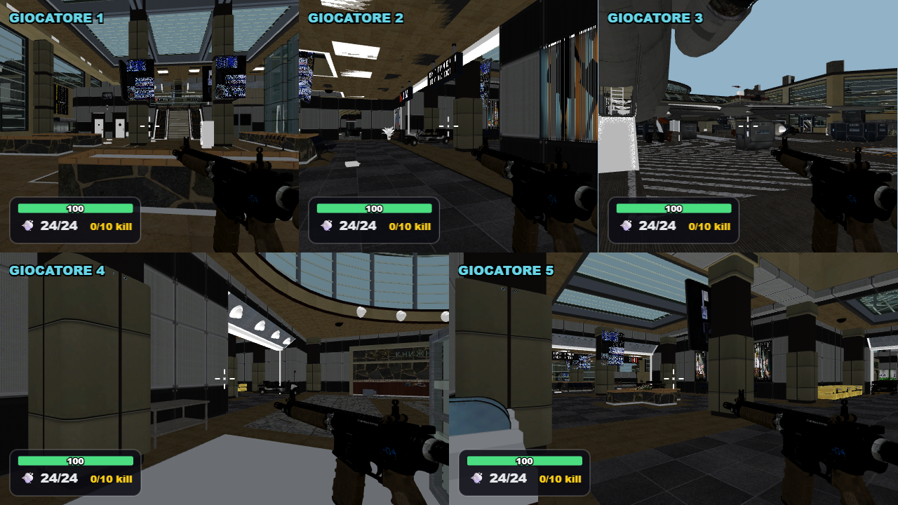
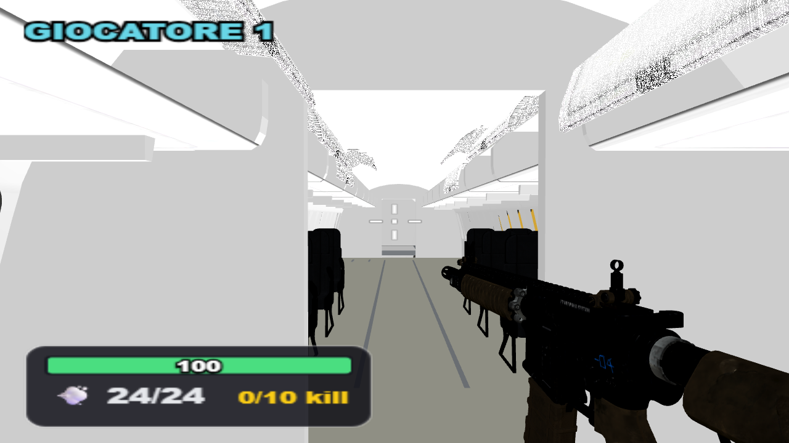
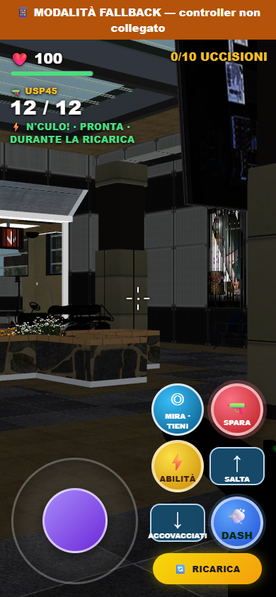
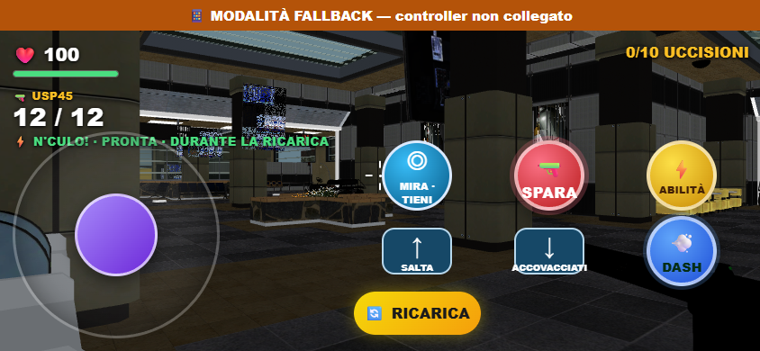

Terminal: accessi e combattimento
Accesso all'aereo, salto, accovacciamento, primo a 10 uccisioni. Texture piu' stabili e meno chiamate di disegno.
Apri il gioco Report e verificheCinque visuali
Nel confronto locale: circa 20 → 36 FPS, stessa risoluzione 1280×720.

Ingresso e cabina

Comandi sul telefono

